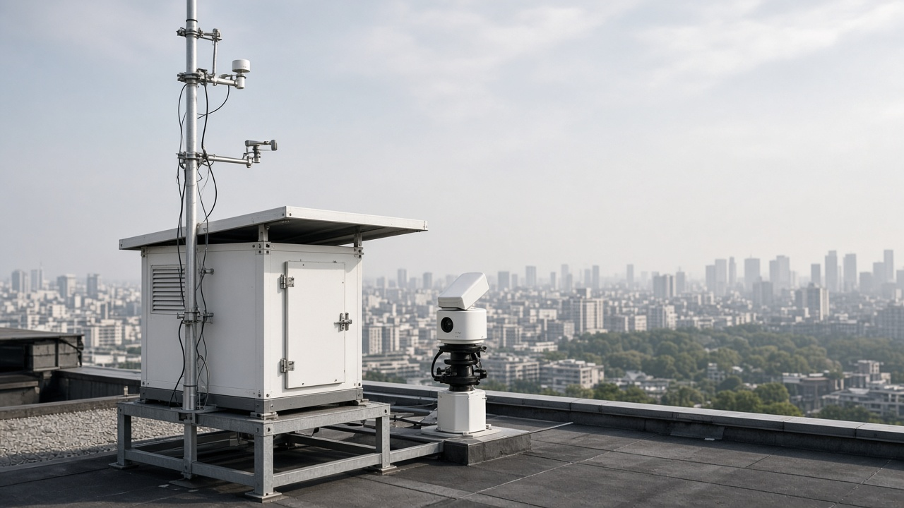

Atmospheric Chemistry and Pollutant Formation
Published on August 20, 2026
Atmospheric chemistry describes how gases and particles interact through photochemical, oxidation, and nucleation processes that transform primary emissions into secondary pollutants. Primary pollutants such as nitrogen oxides, sulfur dioxide, volatile organic compounds, and carbon monoxide are released directly from combustion engines, industrial stacks, biomass burning, and agricultural activities. Once in the troposphere, these compounds undergo radical-driven reactions initiated by solar ultraviolet radiation, producing hydroxyl radicals, ozone, nitrate radicals, and peroxyacetyl nitrates. The rate and pathway of these reactions depend on temperature, humidity, actinic flux, and the concentration of co-emitted species, making pollution chemistry highly variable across urban, rural, and high-altitude settings.
Secondary pollutant formation is especially important for ground-level ozone and fine particulate matter. Nitrogen oxides and volatile organic compounds react in sunlight to generate ozone through a catalytic cycle that can persist for days and transport hundreds of kilometers downwind of source regions. Particulate sulfate, nitrate, and organic aerosols form when precursor gases condense onto existing particles or nucleate new ones in humid air masses. Heterogeneous chemistry on aerosol surfaces further modifies pollutant profiles, converting nitrogen dioxide to nitric acid and oxidizing sulfur dioxide to sulfate. Nighttime chemistry involving nitrate radicals can produce additional organic nitrates that contribute to both PM2.5 and ozone production on subsequent days.
Understanding pollutant formation pathways is essential for designing effective air quality management strategies. Emission inventories must account not only for direct releases but also for the chemical potential of precursor mixtures under local meteorological conditions. Atmospheric models such as chemical transport models and box models simulate reaction networks to predict peak ozone events, wintertime haze episodes, and transboundary pollution plumes. Field measurements using spectrometers, chemiluminescence analyzers, and aerosol mass spectrometers validate model predictions and reveal unexpected reaction channels. By integrating laboratory kinetics, ambient observations, and policy-relevant scenario analysis, atmospheric chemists provide the scientific foundation for emission controls, fuel standards, and regional cooperation on shared airsheds.

वायुमण्डलीय रसायनले प्राथमिक उत्सर्जनलाई द्वितीयक प्रदूषकमा रूपान्तरण गर्ने प्रकाश रासायनिक, अक्सीकरण र न्युक्लियेसन प्रक्रियाहरूको वर्णन गर्छ। नाइट्रोजन अक्साइड, सल्फर डाइअक्साइड, अस्थिर कार्बनिक यौगिक र कार्बन मोनोअक्साइड जस्ता प्राथमिक प्रदूषक सिधै इन्धन दहन, उद्योग, जैविक इन्धन दहन र कृषि गतिविधिबाट उत्सर्जन हुन्छन्। ट्रोपोस्फियरमा पुगेपछि यी यौगिकहरू सूर्यको UV विकिरणले सुरु हुने मुक्त मूलक-चालित अभिक्रियामा संलग्न हुन्छन्, जसले हाइड्रोक्सिल मुक्त मूलक, ओजोन, नाइट्रेट मुक्त मूलक र पेरोक्सीएसिटिल नाइट्रेट उत्पादन गर्छ। तापक्रम, आद्रता, प्रकाशको तीव्रता र सह-उत्सर्जित यौगिकको सान्द्रताले अभिक्रियाको गति र मार्ग निर्धारण गर्छ, जसले प्रदूषण रसायनलाई सहरी, ग्रामीण र उच्च-उचाइका क्षेत्रहरूमा धेरै भिन्न बनाउँछ।
द्वितीयक प्रदूषकको निर्माण भूपृष्ठ-स्तरको ओजोन र PM2.5 का लागि विशेष गरी महत्त्वपूर्ण छ। नाइट्रोजन अक्साइड र अस्थिर कार्बनिक यौगिकहरू प्रकाशमा प्रतिक्रिया गरी उत्प्रेरक चक्र मार्फत ओजोन उत्पादन गर्छन्, जुन दिनहरूसम्म रहन सक्छ र स्रोत क्षेत्रबाट सयौं किलोमिटर टाढासम्म यातायात हुन सक्छ। सल्फेट, नाइट्रेट र कार्बनिक एरोसोल तब बन्छन् जब अग्रगामी ग्याँसहरू अवस्थित कणिकामा संघनित हुन्छन् वा आर्द्र वायुमा नयाँ कणिका न्युक्लियेट गर्छन्। एरोसोल सतहमा विषम रसायनले प्रदूषक प्रोफाइल थप परिवर्तन गर्छ, नाइट्रोजन डाइअक्साइडलाई नाइट्रिक अम्लमा र सल्फर डाइअक्साइडलाई सल्फेटमा रूपान्तरण गर्छ। रातको नाइट्रेट मुक्त मूलक रसायनले थप कार्बनिक नाइट्रेट उत्पादन गर्छ जुन अर्को दिन PM2.5 र ओजोन उत्पादनमा योगदान पुर्याउँछ।
प्रदूषक निर्माणका मार्गहरू बुझ्नु प्रभावकारी वायु गुणस्तर व्यवस्थापनका लागि आवश्यक छ। उत्सर्जन सूचीले प्रत्यक्ष उत्सर्जन मात्र होइन, स्थानीय मौसमी अवस्थाअन्तर्गत अग्रगामी मिश्रणको रासायनिक क्षमतालाई पनि समेट्नुपर्छ। रासायनिक यातायात मोडेल र बक्स मोडेलले अभिक्रिया नेटवर्क सिमुलेट गरी ओजोन शिखर, जाडोको धुंध र सीमान्त पार प्रदूषण प्लुमको पूर्वानुमान गर्छन्। स्पेक्ट्रोमिटर, केमिलुमिनेसेन्स विश्लेषक र एरोसोल मास स्पेक्ट्रोमिटरले मोडेल पुष्टि गर्छ र अप्रत्याशित अभिक्रिया च्यानलहरू प्रकट गर्छ। प्रयोगशाला गतिकी, क्षेत्र मापन र नीतिगत परिदृश्य विश्लेषण एकीकृत गरेर, वायुमण्डलीय रसायनविद्हरूले उत्सर्जन नियन्त्रण, इन्धन मापदण्ड र साझा वायु क्षेत्रमा क्षेत्रीय सहकार्यको वैज्ञानिक आधार प्रदान गर्छन्।
वायुमंडलीय रसायन वर्णन करता है कि प्राथमिक उत्सर्जन प्रकाश रासायनिक, ऑक्सीकरण और न्यूक्लियेशन प्रक्रियाओं के माध्यम से द्वितीयक प्रदूषकों में कैसे बदलते हैं। नाइट्रोजन ऑक्साइड, सल्फर डाइऑक्साइड, वाष्पशील कार्बनिक यौगिक और कार्बन मोनोऑक्साइड जैसे प्राथमिक प्रदूषक सीधे दहन इंजन, औद्योगिक चिमनियों, जैविक ईंधन दहन और कृषि गतिविधियों से निकलते हैं। ट्रोपोस्फियर में पहुँचने के बाद ये यौगिक सौर UV विकिरण द्वारा प्रारंभित मुक्त मूलक-संचालित अभिक्रियाओं में शामिल होते हैं, जो हाइड्रोक्सिल मुक्त मूलक, ओजोन, नाइट्रेट मुक्त मूलक और पेरोक्सीएसिटिल नाइट्रेट उत्पादित करते हैं। तापमान, आर्द्रता, प्रकाश प्रवाह और सह-उत्सर्जित प्रजातियों की सांद्रता अभिक्रिया की दर और मार्ग निर्धारित करती है।
द्वितीयक प्रदूषक निर्माण जमीनी स्तर के ओजोन और PM2.5 के लिए विशेष रूप से महत्वपूर्ण है। नाइट्रोजन ऑक्साइड और वाष्पशील कार्बनिक यौगिक प्रकाश में प्रतिक्रिया करके उत्प्रेरक चक्र के माध्यम से ओजोन उत्पादित करते हैं, जो दिनों तक रह सकता है और स्रोत क्षेत्र से सैकड़ों किलोमीटर दूर तक परिवहन हो सकता है। सल्फेट, नाइट्रेट और कार्बनिक एरोसोल तब बनते हैं जब अग्रगामी गैसें मौजूदा कणों पर संघनित होते हैं या आर्द्र वायु में नए कण न्यूक्लिएट करते हैं। एरोसोल सतहों पर विषम रसायन प्रदूषक प्रोफाइल को और संशोधित करती है, नाइट्रोजन डाइऑक्साइड को नाइट्रिक अम्ल और सल्फर डाइऑक्साइड को सल्फेट में बदलती है।
प्रदूषक निर्माण मार्गों को समझना प्रभावी वायु गुणवत्ता प्रबंधन के लिए आवश्यक है। उत्सर्जन सूचियों को न केवल प्रत्यक्ष उत्सर्जन बल्कि स्थानीय मौसमी परिस्थितियों के तहत अग्रगामी मिश्रण की रासायनिक क्षमता को भी ध्यान में रखना चाहिए। रासायनिक परिवहन मॉडल और बॉक्स मॉडल अभिक्रिया नेटवर्क का अनुकरण करके ओजोन शिखर, सर्दियों की धुंध और सीमा पार प्रदूषण प्लम का पूर्वानुमान करते हैं। स्पेक्ट्रोमीटर, केमिलुमिनेसेंस विश्लेषक और एरोसोल मास स्पेक्ट्रोमीटर मॉडल की पुष्टि करते हैं। प्रयोगशाला गतिकी, क्षेत्र मापन और नीति-प्रासंगिक परिदृश्य विश्लेषण को एकीकृत करके, वायुमंडलीय रसायनविद उत्सर्जन नियंत्रण, ईंधन मानकों और साझा वायु क्षेत्र में क्षेत्रीय सहयोग का वैज्ञानिक आधार प्रदान करते हैं।